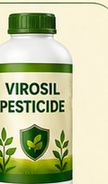

01 · Pesticide / कीट, वायरस एवं कीड़ों से बचाव
Virosil — Pesticide
सभी प्रकार के पौधों और फसलों के लिए
एक एग्रो-पर्पस प्रोडक्ट जो कीट, वायरस और कीड़ों से जुड़ी फसल समस्याओं के लिए तैयार किया गया है। इसे रोकथाम के रूप में और कीट समस्या होने पर नियंत्रण के लिए दोनों तरह से उपयोग किया जा सकता है।
मात्रा
1 लीटर पानी में 2 ml
सामग्री
Natsulf, Poison Oak, Cuprum Met, etc.
मुख्य लाभ
- कीट से जुड़ी फसल समस्याओं के प्रबंधन में सहायक
- विभिन्न प्रकार के पौधों और फसलों के लिए उपयुक्त
- रोकथाम के रूप में उपयोग किया जा सकता है
- कीट नियंत्रण की आवश्यकता होने पर भी उपयोगी
- प्रोडक्ट लेबल के अनुसार नॉन-केमिकल और नॉन-टॉक्सिक
- पानी में मिलाकर आसानी से प्रयोग करें
उपयोग का तरीका
बीज बुवाई के समय सीधे मिट्टी में · बुवाई के 20–25 दिन बाद · कीट नियंत्रण के लिए लगभग 30 दिन बाद · कीट की गंभीर समस्या में लगातार 3 दिन या आवश्यकतानुसार।
केवल पौधों के लिए। मानव या पशु सेवन के लिए नहीं।